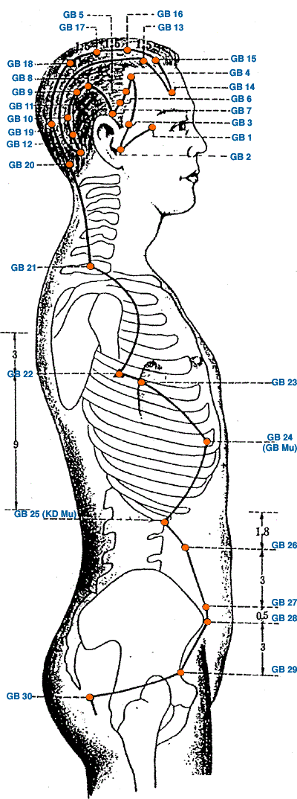
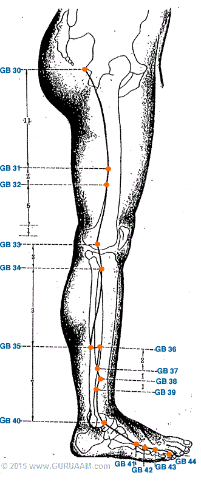

|


|
Meridian Point : GB-1
Location: .5 cun lateral to the outer canthus of the eye in a depression on the lateral side of the orbit.
English Name: Pupil Bone Hole
Pinyin Name: Tong Zi Liao
Actions & Effect:
LV Yang/Heat Rising effecting the head - headache, eye problems, similar to Taiyang which is used more.
Local point for manifestations of heat - pain, inflammation, etc..
Disease
Tinnitus, deafness, headache, redness swelling and pain of the eye, glaucoma, facial distortion
Meridian Point : GB-2
Location: Anterior to the intertragic notch at the posterior border of the condyloid process of the mandible (located with the mouth open).
English Name: Auditory Convergence
Pinyin Name: Ting Hui
Actions & Effect:
Ear issues (along with TH 21 & SI 19) - tinnius, otitis media, deafness.
Eliminate wind locally - TMJ disorder, facial paralysis, trigeminal neuralgia, toothache
Disease
Tinnitus, deafness
Meridian Point : GB-3
Location: In a depression directly above ST 7 on the upper border of the zygomatic arch, in front of the ear.
English Name: Upper Gate
Pinyin Name: Shang Guan
Actions & Effect:
Local point, usually for headache
Disease
Migraine, tinnitus, deafness, facial distortion, lockjaw, toothache
Meridian Point : GB-4
Location: Within the hairline of the temporal region at the junction of the upper 1/4 and lower 3/4 distance between ST 8 and GB 7.
English Name: Forehead Fullness
Pinyin Name: Han Yan
Actions & Effect:
Local Point, usually for headache
Disease
Migraine, tinnitus, deafness, facial distortion, lockjaw, toothache
Meridian Point : GB-5
Location: Within the hairline, midway between ST 8 and GB 7.
English Name: Suspended Skull
Pinyin Name: Xuan Lu
Actions & Effect:
Local Point, usually for headache
Disease
Migraine, redness, swelling and pain of the eye, sudden loss of voice
Meridian Point : GB-6
Location: Within the hairline at the junction of the lower 1/4 and the upper 3/4 distance between ST 8 and GB 7.
English Name: Suspended Tuft
Pinyin Name: Xuan Li
Actions & Effect:
Local Point, usually for headache
Disease
Migraine, redness, swelling and pain of the eye, sudden loss of voice
Meridian Point : GB-7
Location: On the head at the crossing point of the vertical posterior border of the temple at a horizontal line through the ear apex (1 fingerbreadth anterior to TH 20).
English Name: Temporal Hairline Curve
Pinyin Name: Qu Bin
Actions & Effect:
Local Point, usually for headache
Disease
Headache, toothache, lockjaw, sudden loss of voice
Meridian Point : GB-8
Location: Superior to the apex of the auricle, 1.5 cun within the hairline (1/2 ear length from the apex).
English Name: Valley Lead
Pinyin Name: Shuai Gu
Actions & Effect:
Migraine, one-sided or unilateral headaches and associated nausea, vomiting a/or visual disturbances.
Hangover, eases headache and harmonizes the middle jiao.
In the Bronze Man this point is indicated for cold & phlegm in the Diaphragm & ST, injury by alcohol & agitation & fullness with ceaseless vomiting
Disease
Migraine, vertigo, vomiting
Meridian Point : GB-9
Location: .5 cun posterior to GV 8, 2 cun within the hairline, directly above the posterior border of the auricle.
English Name: Celestial Hub
Pinyin Name: Tian Chong
Actions & Effect:
Local Point, usually for headache
Disease
Headache, deafness, tinnitus
Meridian Point : GB-10
Location: At the midpoint of the curve from GB 9 to GB 11, posterior and superior to the mastoid process, at the junction of the middle 1/3 and upper 1/3 of curved line connecting GB 9 to GB 12
English Name: Floating White
Pinyin Name: Fu Bai
Actions & Effect:
Local Point, usually for headache
Disease
Headache, deafness, tinnitus
Meridian Point : GB-11
Location: Posterior and superior to the mastoid process at the junction of the middle 1/3 and lower 1/3 of a curved line connecting GB 9 to GB 12
English Name: Head Portal Yin
Pinyin Name: Tou Qiao Yin
Actions & Effect:
Local Point, usually for headache
Disease
Headache, deafness, tinnitus
Meridian Point : GB-12
Location: In a depression posterior and inferior to the mastoid process
English Name: Completion Bone
Pinyin Name: Wan Gu
Actions & Effect:
Dispel exterior & interior wind from the head - tinnitus, tremors in the head, occipital headache, neck rotation ROM issues.
Regulates and calms the spirit - insomnia
Disease
Headache, stiffness and pain of the neck, toothache, ear problems, facial distortion, epilepsy, malaria
Meridian Point : GB-13
Location: .5 cun within the hairline of the forehead, 3 cun lateral to GV 24 (junction of medial 2/3 and lateral 1/3 distance from GV 24 to ST 8)
English Name: Root Spirit
Pinyin Name: Ben Shen
Actions & Effect:
Regulate Liver/GallBladder, Clear Wind, Calm the Mind.
Stiff Neck, Headache.
Epilepsy.
Tong Ren/Tam Healing System: Used to effect the frontal lobe. Used on the (R) side for psychological conditions such as anxiety and depression and on the (L) side for attention related conditions such as ADD/ADHD. Also useful for issues which come from subconscious influences.
Disease
Headache, dizziness
Meridian Point : GB-14
Location: On the forehead, directly above the pupil, 1 cun above the midpoint of the eyebrow
English Name: Yang White
Pinyin Name: Yang Bai
Actions & Effect:
Frontal/temporal (ST/TH area) headaches.
Eye issues (direct needle towards eye) - redness, swelling, itching, twitching, etc
Disease
Pain of the eyes, blurred vision, twitching of the eye lids, facial distortion, headache and facial pain
Meridian Point : GB-15
Location: On the head, directly above the pupil, .5 cun above the anterior hairline at the midpoint of a line connecting GV 24 to ST 8 (directly above GB 14)
English Name: Head Overlooking Tears
Pinyin Name: Tou Lin Qi
Actions & Effect:
Excessive tearing from internal or external wind effecting the eyes.
Sinus issues (with GV 23, Yintang a/or LI 20) - sinusitis, rhinitis
Disease
Headache, vertigo, redness, swelling anmd pain in the eyes, nasal obstruction, tinnitus, deafness
Meridian Point : GB-16
Location: On the head, 1.5 cun posterior to GB 15, 2 cun above the anterior hairline and 2.25 cun lateral to the midline of the head.
English Name: Eye Windows
Pinyin Name: Mu Chuang
Actions & Effect:
Local Point.
Disease
Blurring of vision, glaucoma, redness, swelling and pain of the eye, headache, nasal congestion, swelling of facial region
Meridian Point : GB-17
Location: On the head, 3.5 cun above the anterior hairline and 2.25 cun lateral to the midline of the head (1.5 cun posterior to GB 16).
English Name: Upright Construction
Pinyin Name: Zheng Ying
Actions & Effect:
Clears Heat and Regulates the Gallbladder.
Headache, Dizziness
Disease
Headache, dizziness, acute stiffness of the lips, toothache
Meridian Point : GB-18
Location: On the head, 5 cun above the anterior hairline and 2.25 cun lateral to the midline of the head (1.5 cun posterior to GB 17).
English Name: Spirit Support
Pinyin Name: Cheng Ling
Actions & Effect:
Local Point.
Disease
Headache, dizziness, acute stiffness of the lips, toothache
Meridian Point : GB-19
Location: On the head and level with the upper border of the external occipital protruberance or GV 17, 2.25 cun lateral to the midline of the head (directly above GB 20, level with GV 17).
English Name: Brain Hollow
Pinyin Name: Nao Kong
Actions & Effect:
Local Point.
Tong Ren/Tam Healing System: Used to effect the visual cortex. Useful for muscle/coordination problems with the eyes from conditions such as MS, Parkinson's, etc.
Disease
Headache, dizziness, rigidity and pain of the neck, psychosis, epilepsy
Meridian Point : GB-20
Location: In a depression between the upper portion of the sternocleidomastoid muscle and the trapezius, level with GV 16
English Name: Wind Pool
Pinyin Name: Feng Chi
Actions & Effect:
Dispel Exterior or Interior Wind - (exterior) - fever/chills, stiff neck; (internal) - paralysis, twitching, tremors, numbness, dizziness, vertigo.
All issues of the head, brain (seizures, memory, mental/neurological disorders), face, throat and sense organs (eyes, ears, nose, tongue).
Headache, especially occipital.
Eye issues.
Issues of the neck, shoulders a/or upper back - pain, weakness, stiffness.
Hypertension, especially with LV Yang Rising.
Tong Ren/Tam Healing System: Used most often in conjunction with the huatuo points of C1 and C2 to open the spinal cord, generally used to relieve neck tension.
Disease
Common cold, nasal congestion, headache, redness, swelling and pain of the eye, vertigo, tinnitus, deafness, epilepsy, stiffness and pain in the neck
Meridian Point : GB-21
Location: On the shoulder directly above the nipple at the midpoint of a line connecting GV 14 and the acromion at the highest point of the shoulder.
English Name: Shoulder Well
Pinyin Name: Jian Jing
Actions & Effect:
Local point for occipital headache, tight trapezius muscles and/or neck/shoulder pain.
Phlegm related issues of the head and neck - embolic stroke, neck lumps, swollen lymph nodes, tumors.
Phlegm related issues of the breast and chest - mastitis, breast abscess, asthma, dyspnea.
Stongly influence Qi downward - useful for rebellious Qi, cough.
Contraindicated in Pregnancy, useful for difficult labor, retained placenta.
Gao Wu felt that balancing GB 21's strong descending action with ST 36's strong centering action is important.
Tong Ren/Tam Healing System: Release the neck and shoulders and descend energy.
Disease
Stiffness and pain of neck, shoulder and back, paralysis of upper limbs, breast abscess
Meridian Point : GB-22
Location: On the midaxillary line when the arm is raised below the axilla in the 5th ICS (directly below HT 1).
English Name: Armpit Abyss
Pinyin Name: Yuan Ye
Actions & Effect:
Local Point.
Disease
Chest congestion, pain in the hypochondrium
Meridian Point : GB-23
Location: 1 cun anterior to GB 22, level with the nipple in the 5th ICS.
English Name: Sinew Seat
Pinyin Name: Zhe Jin
Actions & Effect:
Local Point.
The Great Compendium indicates GB 23 as the GB Front Mu
Disease
Chest congestion, pain in the hypochondrium
Meridian Point : GB-24
Location: Directly below the nipple in the 7th ICS, 4 cun lateral to the AML
English Name: Sun and Moon
Pinyin Name: Ri Yue
Actions & Effect:
LV & GB issues, especially involving heat and stagnation - gallstones, hepatitis, jaundice.
LV/GB attacking the SP - nausea, vomiting, sour belching, bitter taste, acid reflux.
GB related emotional imbalances - fearfullness, shyness, indecisiveness, timidity, sighing.
The Ling Shu indicates GB 24 (GB Front Mu) & UB 19 (GB Back Shu) for frequent indecisiveness.
Disease
Jaundice, vomiting, acid regurgitating
Meridian Point : GB-25
Location: On the lateral side of the abdomen on the lower border of the free end of the 12th rib
English Name: Capital Gate
Pinyin Name: Jing Men
Actions & Effect:
Local point for pain in the lumbar a/or lateral costal region especially when presenting with a KD deficiency.
KD/SP Issues involving dampness - diarrhea (esp. watery/cold), bloating, abdominal distention.
Diuretic point - urinary retention, difficult urination, edema.
Uterine stones - assists passage
Disease
Urinary retention or pain and difficulty with passing urine, kidney problems, edema, lumbar pain, abdominal distension, diarrhea
Meridian Point : GB-26
Location: Directly below LV 13 at the crossing point of a vertical line through the free end of the 11th rib and a horizontal line through the umbilicus (level with CV 8)
English Name: Girdling Vessel
Pinyin Name: Dai Mai
Actions & Effect:
GB 26, GB 27 & GB 28 are all useful points on the Dai Mai meridian which influences the GB, KD, Chong Mai, CV & GV Meridians.
GB 26 is most useful for women's issues - leukorrhea from any etiology, gynecological disorders, prolapses, infertility.
Menstrual related pains, cramping, bloating a/or migraines.
Local point for the lower back and waist
Disease
Abdominal pain, amenorrhea, irregular menstruation, hernia, pain in the lumbar
Meridian Point : GB-27
Location: On the lateral side of the abdomen, anterior to the ASIS, 3 cun below the level of the umbilicus (lateral to CV 4)
English Name: Fifth Pivot
Pinyin Name: Wu Shu
Actions & Effect:
GB 26, GB 27 & GB 28 are all useful points on the Dai Mai meridian which influences the GB, KD, Chong Mai, CV & GV Meridians.
GB 27 is more useful for male issues - testicular pain a/or retraction, lower abdominal pain, shan disorder
Disease
Abdominal pain, hernia, constipation
Meridian Point : GB-28
Location: Anterior and Inferior to the ASIS, .5 cun anterior and inferior to GB 27
English Name: Linking Path
Pinyin Name: Wei Dao
Actions & Effect:
GB 26, GB 27 & GB 28 are all useful points on the Dai Mai meridian which influences the GB, KD, Chong Mai, CV & GV Meridians.
Local Point.
Disease
Abdominal pain, hernia, constipation
Meridian Point : GB-29
Location: In a depression at the midpoint between the prominence of the greater trochanter and the ASIS
English Name: Squatting Bone Hole
Pinyin Name: Ju Liao
Actions & Effect:
Hip pain, especially with pain radiating from the hips, sciatica.
Shoulder pain, using the opposite joints needling method
Disease
Lumbar pain, weakness, numbness and pain of the lower extremities
Meridian Point : GB-30
Location: At the junction of the lateral 1/3 and medial 2/3 distance between the prominence of the greater trochanter and the hiatus of the sacrum (GV 2), (located with the patient in a lateral recumbent position with thigh flexed).
English Name: Jumping Round
Pinyin Name: Huan Tiao
Actions & Effect:
Sciatica, pain, numbness, atrophy of lower back, hip, buttocks a/or lower limbs.
Bi (painful obstruction) or Wei (flaccidity, weakness) of the leg.
Urticaria, red, itchy skin issues from wind
Disease
Pain in the loins, obstruction of lower limbs
Meridian Point : GB-31
Location: On the midline of the lateral aspect of the thigh, 7 cun above the transverse popliteal crease, when patient is standing erect with hands close to sides the point is at the tip of their middle finger.
English Name: Wind Market
Pinyin Name: Feng Shi
Actions & Effect:
Lateral and posterior leg issues - sciatica, weakness, numbness, post-stroke symptoms of lower limbs.
Red, itchy, skin disorders from wind a/or dampness anywhere on the body.
Tong Ren/Tam Healing System: Sciatic nerve issues, lower back pain, leg muscle issues.
Disease
Lumbar pain, weakness, numbness and pain of the lower extremities
Meridian Point : GB-32
Location: On the lateral aspect of the thigh, 5 cun above the popliteal crease, 2 cun below GB 31, between the tendons of vastus lateralis and biceps femoris.
English Name: Central River
Pinyin Name: Zhong Du
Actions & Effect:
Local Point.
Disease
Lumbar pain, weakness, numbness and pain of the lower extremities
Meridian Point : GB-33
Location: 3 cun above GB 34, lateral to the knee joint, in a depression above the external epicondyle of the femur, between the femur and the tendon of biceps femoris.
English Name: Knee Yang Joint
Pinyin Name: Xi Yang Guan
Actions & Effect:
Local Point.
Disease
Coldness and pain of the knees and numbness of shanks
Meridian Point : GB-34
Location: In a depression anterior and inferior to the head of the fibula
English Name: Yang Mound Spring
Pinyin Name: Yang Ling Quan
Actions & Effect:
Hui Meeting of the Sinews - useful for treating soft tissue anywhere in the body, contracture, cramping, pain, spasm, weakness, numbness, paralysis.
Sciatica and issues with the low back, hip, a/or lower limbs, knees.
All disorders of the lateral regions of the body.
Lower He Sea of the GB - effects GB organ, usually with GB Damp-Heat conditions, cholecystitis, hepatitis, jaundice, nausea, vomiting, bitter taste in mouth, gallstones.
Shao Yang level diseases presenting with alternating chills/fevers, costal pain, bitter taste in mouth.
LV attacking SP - counterflow Qi, nausea, vomiting, indigestion.
Tong Ren/Tam Healing System: Sciatic nerve issues, leg muscle issues (cramps, fatigue), gallstones.
Disease
Hypochondriac pain, bitter taste in the mouth, jaundice, vomiting, weakness, numbness and pain of the lower extremities, stiffness of neck
Meridian Point : GB-35
Location: 7 cun above the tip of the external malleolus on the posterior border of the fibula, level with GB 36 & UB 58
English Name:Yang Intersection
Pinyin Name:Yang Jiao
Actions & Effect:
Local Point.
Disease
Distention and fullness of the chest and hypochondria, weakness, numbness and pain of the lower extremities, depressive psychosis
Meridian Point : GB-36
Location: 7 cun above the tip of the external malleolus on the anterior border of the fibula
English Name: Outer Hill
Pinyin Name: Wai Qiu
Actions & Effect:
Mentioned in the Bronze Man for treating rabies w/rage, fever, convulsions - moxa 3 cones after bite.
Acute cholecystitis.
Acute painful skin conditions
Disease
Distention and fullness of the chest and hypochondria, weakness, numbness and pain of the lower extremities, depressive psychosis
Meridian Point : GB-37
Location: 5 cun above the tip of the external malleolus on the anterior border of the fibula
English Name: Bright Light
Pinyin Name: Guang Ming
Actions & Effect:
Eye issues, especially LV related - redness, itching, blurry vision, night blindness, optic nerve atrophy, cataracts.
Lower leg, calf a/or foot problems - dropped foot, edema, atrophy, obstruction.
Headaches effecting the region around the eyes - temporal, infra/supraorbital, migraines.
Breast issues from stagnant LV Qi - pain, insufficient lactation
Disease
Eye pain, night blindness, blurring of vision, weakness, numbness and pain of the lower extremities, disternding pain in the breast
Meridian Point : GB-38
Location: 4 cun above the tip of the external malleolus, slightly anterior to the anterior border of the fibula between extensor digitorum longus and peroneous brevis
English Name: Yang Assistance
Pinyin Name: Yang Fu
Actions & Effect:
Moving point for GB channel issues - pain, heat, stagnation along the channel.
Fire Point - useful for treating the fever period of Shao Yang stage diseases (alternating fever and chills)
Disease
Migraine, distending pain in the chest, numbness and pain of the lower extremities, sore throat
Meridian Point : GB-39
Location: 3 cun above the tip of the external malleolus in a depression between the posterior border of the fibula and the tendons of peroneous longus and brevis
English Name: Suspended Bell (alt. Severed Bone)
Pinyin Name: Xuan Zhong (alt. Jue Gu)
Actions & Effect:
Hui Meeting of the Marrow - excess or deficiency conditions effecting the bone marrow, ligaments, tendons, muscles a/or bones - pain, spasms, numbness, weakness.
Chronic Bi or Wei syndromes especially with KD Deficiency - thought to strenghthen immunity.
Neck issues, stiffness, arthritis, strain, sprain, whiplash, headache.
Descends rising LV/GB heat - dizziness, tinnitus.
Disease
Stiffness of the neck, distending pain in the chest, sore throat, numbness and pain of the lower extremities
Meridian Point : GB-40
Location: Anterior and inferior to the external malleolus in a depression on the lateral side of the tendon of extensor digitorum longus
English Name: Hill Ruins
Pinyin Name: Qiu Xu
Actions & Effect:
Local point for issues of the lower limbs a/or ankles - weakness, paralysis, atrophy.
Wrist issues using the cross joints needling method.
Chronic mallaria where chills are predominant
Disease
Distention and pain in the chest, weakness, numbness and pain of the lower extremities, redness, swelling and pain of eyes, cataract, malaria
Meridian Point : GB-41
Location: Posterior to the 4th metatarsophalangeal joint in a depression lateral to the tendon of extensor digiti minimi
English Name: Foot Overlooking Tears
Pinyin Name: Zu Lin Qi
Actions & Effect:
Moves LV Qi - menstrual/breast disorders, distal point for headaches (lateral or migraines - classical mentioned for occipital or vertex).
As the name indicates - "foot overlooking tears," useful for eye problems, redness, swelling and lacrimation issues, tearing, excessive lacrimation.
Local point for lateral foot issues - pain, cramping
Disease
Migraine, redness and pain of the eye, pain in the hypochondrium, spasm, pain and numbness of the foot and toes, irregular menstruation, breast abscess
Meridian Point : GB-42
Location: Posterior to the 4th metatarsophalangeal joint between the 4th and 5th metatarsals on the medial side of the tendon of extensor digiti minimi.
English Name: Earth Fivefold Convergence
Pinyin Name: Di Wu Hui
Actions & Effect:
Local Point.
Disease
Headache, eye pain, tinnitus, deafness
Meridian Point : GB-43
Location: On the dorsum of the foot between the 4th and 5th toes, proximal to the margin of the web at the junction of the red and white skin
English Name: Pinched Ravine
Pinyin Name: Xia Xi
Actions & Effect:
Ying Spring Point - clears heat from the entire channel.
Effects opposite end of the channel - headaches, dizziness, tinnitus, eye a/or ear pain.
GB Damp Heat stagnations in the channel - swelling in axillary region, lateral costal pain, breast abscesses, knee pain
Disease
Headache, dizziness, redness, swelling and pain of the eye, tinnitus, deafness, breast abscess
Meridian Point : GB-44
Location: .1 cun posterior to the corner of the nail on the lateral side of the 4th toe
English Name: Foot Portal Yin
Pinyin Name: Zu Qiao Yin
Actions & Effect:
Insomnia especially with nightmares - LV/GB heat rising to effect the HT (fullness below the heart).
Issues with the sense organs (eyes, ears, nose, mouth, tongue) related to excesses a/or stagnation - pain, inflammation, speech disorders, stiff tongue
Disease
Migraine, redness, swelling and pain of the eyes, pain in the hypochondria, tinnitus, deafness, insomnia, cough
|